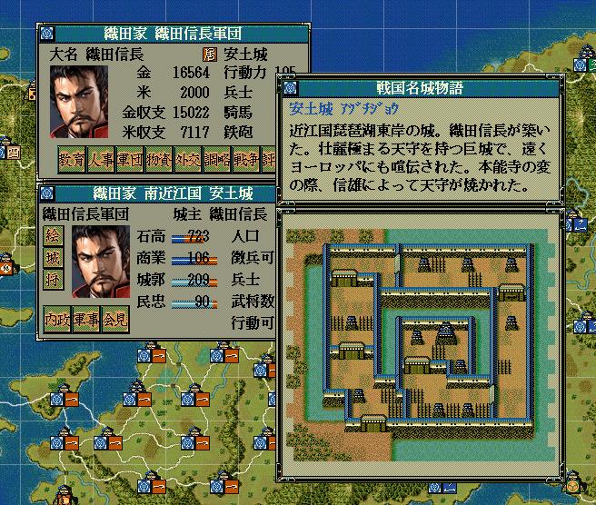

%(hilight)s
<h2><i class="fa fa-plug fa-fw"></i>城列伝・城内マップMod</h2>
<ul class="checklist">
    <li>
    <h3>概要</h3>
    <li>
    <p>城列伝(戦国名城物語)を表示した際に、対象城のヘックスマップを表示するためのModとなります。</p>
    <p>「特殊Mod」という位置づけで、TSModが必要です。<br>
    </p>
    <p><br>
    </p>
    <li>
    <h3>ダウンロード</h3>
    <dl>
        <dt>
        <div class="download_file">DOWNLOAD ⇒ <a href="%(file)s">城列伝内マップMod</a>ファイル。</div>
        </dt>
        <dd>
        <div class="update_time">└更新日 %(year)04d/%(mon)02d/%(mday)02d</div>
        </dd>
    </dl>
    <li>
    <h3>使い方</h3>
    <ul>
        <li>上記ファイルを解凍し、「CastleMapInRetsudenMod.dll」と「CastleMapInRetsudenImplement.dll」の<br>
        ２つのファイルを天翔記ディレクトリにコピーする。<br>
        <li>以上で、城列伝を見た際に、同時に該当の城内マップ
    </ul>
    <li>
    <h3>動作環境</h3>
    <ul>
        <li>TSModが導入されている必要があります。
        <li>.NET FrameWork 4.0
        <li>本Modの導入により天翔記が起動しなくなったといった場合、天翔記を終了した後、<br>
        一度、<a href="?page=nobu_mod_the_hexmap_editor">城マップエディタ</a>を起動して、 <span class="negative">そのまま保存</span>してください。<br>
        データが正規化されることで、データ展開時に必要となるメモリ状況が改善する可能性があります。<br>
    </ul>
</ul>